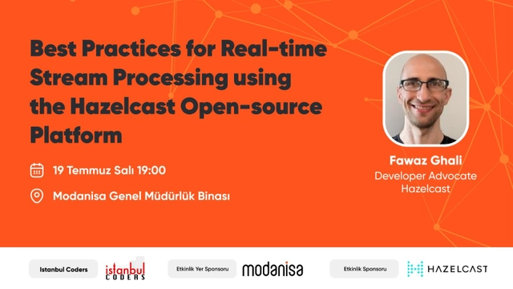

Abstract:
Real-time stream processing has its own challenges such as windowing, event time and late events, streaming fault tolerance, and processing guarantees. In this talk, I will address those challenges and demonstrate the best practices for real-time stream processing, from data ingestion to data processing with ultra-low latency at scale and at speed, using the Hazelcast platform. I will discuss how you can optimize your real-time streaming projects in the following areas: scalability, performance, failover, reliability, and data recovery.
Resources: